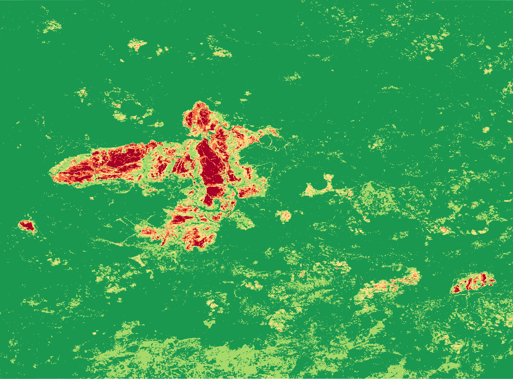

dNBR Şiddeti (0–4)
Eşik tabanlı yanıklık şiddeti sınıfları.
Sentinel‑2 temelli NDVI/NBR türevleri, fark haritaları ve şiddet sınıflandırması.
Sentinel‑2 tabanlı NDVI/NBR fark analizleri ile yangın etkisi (yeşil örtü kaybı ve yanıklık şiddeti) haritalanmıştır.
QA60+SCL+NDWI/MNDWI maskelemesi ve 100 m kıyı tamponu ile su/kıyı yalancı sinyalleri elenmiş; NDVIpre>0.25
koşulu ile analiz yanabilir örtüye odaklanmıştır.
Kartlar etkileşimli haritalara ve statik görsellere bağlanır.
Nihai şiddet ve fark haritaları. Kartlara tıklayarak etkileşimli haritayı açın.
Eşik tabanlı yanıklık şiddeti sınıfları.
Yanıklık duyarlı fark indeksi.
Vejetasyon değişimi (öncesi − sonrası).
Kompozit haritalar ve doğal renk (RGB) görselleri.
Sentinel‑2 median kompozit.
Sentinel‑2 median kompozit.
Yanıklık duyarlı indeks.
Yanıklık duyarlı indeks.

Doğal renk (B4,B3,B2).

Doğal renk (B4,B3,B2).
Özet istatistikler ve şiddet alan dökümü.